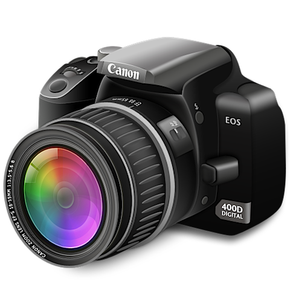

Появление первого фотоаппарата совпало с изобретением «гелиографии» Жозефом Нисефором Ньепсом в 1826 году[1][2]. Устройство для регистрации изображения на поверхности асфальтового лака было вариантом камеры-обскуры, до этого активно использовавшейся художниками для рисования с натуры. Дальнейшее развитие технологии связано с изобретением дагеротипии Жаком Луи Дагером. Дагеротипия быстро получила распространение в качестве инструмента для портретирования, став коммерчески выгодной. Результатом стала разработка новых устройств для фотосъёмки, наиболее оригинальным из которых в 1840 году стала камера Александра Уолкотта с вогнутым зеркалом вместо объектива[3]. Не менее революционной стала цельнометаллическая «Ganzmetallkamera» немецкой компании «Фохтлендер», оснащённая светосильным объективом Петцваля[4].  Современная копия дагеротипной камеры «Фохтлендер» 1841 года выпуска Наиболее бурное развитие фотоаппаратостроения началось после открытия мокрого коллодионного процесса, вытеснившего неудобные и дорогие дагеротип и калотипию[5]. Фотоаппаратура для этой технологии быстро приобрела черты привычной деревянной крупноформатной камеры с фокусировочным мехом и портретным объективом. Внедрение сухих желатиносеребряных фотопластинок с высокой светочувствительностью позволило вести съёмку с моментальными выдержками, потребовавшими специального механизма для регулировки длительности воздействия света. Таким устройством стал фотозатвор, первые конструкции которого появились в 1853 году[6]. Изобретение Оттомаром Аншютцем скоростного шторно-щелевого затвора привело к появлению репортёрских фотоаппаратов — пресс-камер, запущенных в массовое производство фирмой «Goerz» в 1888 году[7]. Появление желатиносеребряных фотобумаг, пригодных для проекционной печати, а также рост разрешающей способности фотоэмульсий запустили процесс миниатюризации фотоаппаратуры и появления её новых портативных разновидностей, таких как складные и дорожные камеры. Технологический прорыв осуществил в 1888 году Джордж Истмен, выпустивший первую бокс-камеру Kodak, заряженную рулонной фотоплёнкой на гибкой целлулоидной подложке[8][9]. Изобретение положило начало любительской фотографии, избавив фотографа от необходимости проявлять фотоматериал и печатать снимки. Всё это делала компания Истмена, куда по почте отсылался фотоаппарат с отснятой плёнкой. Обратно фотолюбитель, заплатив 10 долларов, получал перезаряженную камеру, готовые негативы и контактные отпечатки с них[10][11][12]. Одновременно с компактными появились многочисленные фотоаппараты для скрытной съёмки, в том числе встроенные в предметы одежды: галстуки, шляпы и дамские сумочки[13]. Фотоаппарат «Kodak № 2» для рулонной фотоплёнки. 1896 год Развитие во второй половине XIX века технологий цветной фотографии, основанных на трёхцветной теории цветоощущения Максвелла, привело к распространению специализированных устройств, позволяющих осуществлять цветоделение различными способами. Наиболее простое решение заключалось в съёмке трёх цветоделённых изображений на общую фотопластинку через три объектива, закрытых светофильтрами основных цветов[14]. Однако, расстояние между ними неизбежно приводило к параллаксу и, как следствие, цветным контурам на изображении близких предметов. Более совершенными оказались фотоаппараты с последовательной съёмкой через один объектив на удлинённую фотопластинку с автоматическим пошаговым смещением. Наиболее известны такие фотоаппараты конструкции Адольфа Мите, одним из которых пользовался Сергей Прокудин-Горский[15]. Камеры со сдвижной кассетой на три экспозиции годились только для съёмки неподвижных объектов и пейзажей из-за неизбежного временно́го параллакса. Всех недостатков были лишены трёхпластиночные фотоаппараты с внутренним цветоделением, позволявшие снимать в том числе движущиеся предметы через общий объектив в одну экспозицию. Изобретение автохромного процесса, и последующее распространение многослойных фотоматериалов позволили отказаться от сложной фотоаппаратуры, но тем не менее камеры с внутренним цветоделением с помощью полупрозрачных зеркал эксплуатировались в издательском бизнесе до середины 1950-х годов[16]. Одну из ключевых ролей в совершенствовании фотоаппаратуры сыграло становление аэрофотографии, получившей бурное развитие после Первой мировой войны[17]. Большие скорости полёта требовали коротких выдержек, вынуждая компенсировать их высокой светосилой объективов. При этом, недопустимость геометрических искажений, особенно при фотограмметрии, вынуждала разрабатывать оптику с минимальной дисторсией. Многие конструкции фотозатворов и объективов, привычные в современной фотоаппаратуре, были разработаны специально для аэрофотоаппаратов, лишь потом найдя применение в камерах общего назначения. То же касается вспомогательных механизмов: например, автоматизированная перезарядка фотоаппарата впервые использована именно для аэрофотосъёмки.